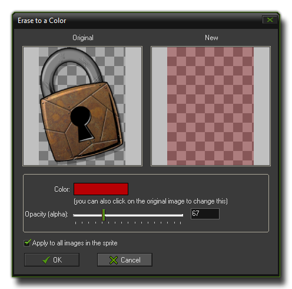

The Sprite Editor Edit Menu
This section explains the edit menu functions associated with the GameMaker:Studio sprite editor.
 The edit menu contains a number of commands related to the edition of sub-images within the sprite (most of these commands are the same as those found on the toolbar as buttons) :
The edit menu contains a number of commands related to the edition of sub-images within the sprite (most of these commands are the same as those found on the toolbar as buttons) :
- Undo : This will undo the last action, and you can repeatedly undo consecutive actions with this button, but note that the number of undos that can be performed is limited to 16.
- Redo : If you have used the undo function, you can use this to go back to the state that you undid. This is limited to the number of undos that you have done previously.
- Cut : You can use this to "cut" a sub image out of the list of sub-images. This cut image is stored to the clipboard and can then be pasted into another part of the same sprite, another sprite resource
or even into some other program, independent of GameMaker:Studio. Please note that the transparencies may not be the same when pasted into another program.
- Copy : This button will copy the currently selected sub-image into the clipboard for use in another place, either the same sprite, another sprite or even an alternate program.
- Paste : You can use this button to paste whatever image you have previously stored in the clipboard (with cut, or copy) into the current sprite as a new sub-image. If the pasted image is larger or smaller than the current
sprite, you will be shown the "Inserting Image" window (see "Add A Sprite From A File", above). If the image has been copied from a source other than GameMaker:Studio, then transparencies may
not be the same.
- Erase : As you might imagine, this command erases one or all images to a particular color. The following window will open when you select this :

What this does is it removes all the current pixel information, but not the sub-image itself, and replaces it with a single color of your choice. You can also adjust the transparency and select whether you want to erase all the
sub-images, or just the currently selected one.
- Delete : Delete the currently selected sub-image, removing it from the sprite completely.
- Move Left : Move the currently selected sub-image one position to the left in the sequence.
- Move Right : Move the currently selected sub-image one position to the right in the sequence.
- Add Empty : Add a new empty sub-image at the end of the sequence.
- Insert Empty : Insert a new empty sub-image before the currently selected subimage.
- Edit : Edit the currently selected sub-image using the built-in image editor. More on this in the section Editing Sub-images.(官方文档无此链接文件)
- Set Transparency Background : Here you can indicate how the transparent area of the sprites should be shown in the sprite editor. You can either use a customizable block pattern, or a color that you can change
by clicking on the color box, as shown in the following image (note that this does not affect the sprite itself, only how you view it in the editor) :

Back : Editing Sprites